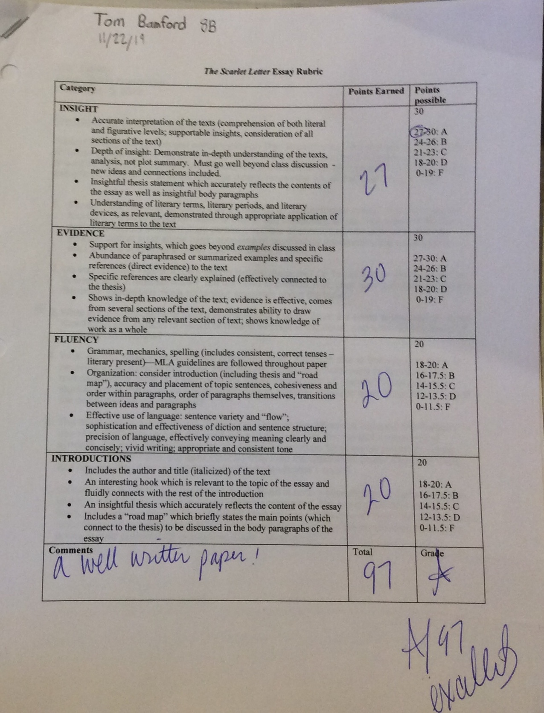

I believe this shows that if my homework and notes are clear and well-written it helps me get a better grade on my test. In addition, it proves to me that if I put in hardwork and persistence into my notes, homework, and practice test, it makes visible results in the form of a test grade.
This essay shows my progress towards my goal for the year which was improving my thinking map. As a result of my thinking map, my grade on the essay showed an improvement.
Both Griffin and I had to present this spanish script infront of the class. I believe the reenactment of the script went smoothly since we both pronounced and memorized the script correctly. I included this artifact because I believe it somewhat relates to my strech which was participation. The Habits of Mind that is identifiable in this image was in my opinion striving for accuracy for I am not the best at pronouncing spanish words completely accurately, however I managed to get through the presentation with only one mispronounced word.

I believe that the essay on Unit 1 is a prime example that I have not yet achieved my goal for the year since my I believe the thinking map of the essay didn't provide enough of a roadmap which lead me to freestyle of track during the in class writing period. As a result, my grade of the essay was not as high as I would of liked, however it brought to my attention that my thesis statements also need work because even during the recent two essays that we had to write for the Unit 2 assessment, I struggle to write an thesis that would support my essay.